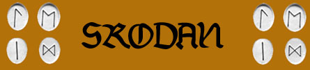
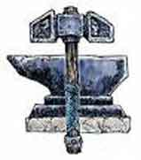
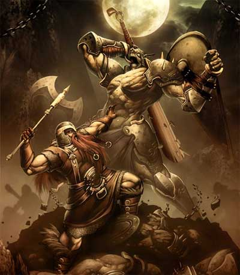
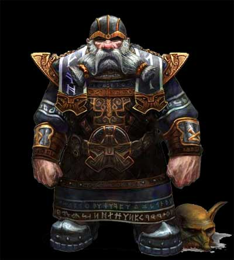
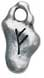
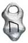
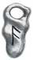
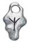
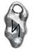
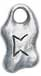

Notizie Generali
Il
culto di Srodan si perde nella notte dei tempi, coincidente con quello delle
altre razze longeve di semi-umani. Vista il relativo isolamento della razza
nanica non c'è stato lo scambio di credenze ecumeniche tali da far evolvere e
cambiare i dogmi della religione nanica, che è tendenzialmente invariata da
migliaia di anni.
Srodan è il padre di tutti i Nani, colui che ha donato il Martello e l'Incudine
alla popolazione nanica affinché la stessa rimanesse salda nel periglioso
cammino della vita. Fin dall'inizio della loro storia, infatti, i Nani hanno
dovuto affrontare le difficoltà insite nel vivere nelle profondità della roccia
ed hanno dovuto lottare contro orde innumerevoli creature che pure avevano
scelto di dimorare tra le rocce montuose.
Srodan, quindi, rappresentando il punto saldo della razza nanica incarna da un
lato l'esigenza di un rigoroso ordine e di una saggia giustizia e dall'altro la
fermezza richiesta quotidianamente al popolo nanico.
Simboli fondamentali del Culto
I
simboli principali del culto di Srodan sono il martello e l'incudine.
Il Martello rappresenta la forza ed il coraggio
della razza nanica, lo spirito Guerriero che lotta e vince sui nemici della
razza, la giustizia che prevale sui torti e sui crimini efferati.
L'Incudine rappresenta la saldezza e la resistenza
alle difficoltà della vita, lo stoicismo e la praticità con cui i nani
affrontano le avversità, la saldezza delle credenze e delle leggi naniche. Non a
caso, le leggi utilizzate dalle varie comunità naniche sono incise sulla pietra
e poste circolarmente ai piedi di una grande incudine posizionata all'interno di
un tempio di Srodan.
Messi assieme, inoltre, questi due simboli rappresentano la bravura del popolo
nanico nel forgiare armi e armature la cui resistenza è divenuta leggendaria nel
mondo di Arelia.

Descrizioni raffiguranti la
divinità
Srodan è rappresentato come un potente guerriero nanico dalla folta barba rossa e dalla muscolatura vigorosa. Nelle sue raffigurazioni Srodan indossa con incredibile leggerezza armature forgiate con i più resistenti e pesanti materiali ed utilizza armi tipiche della tradizione nanica quali le asce ed i martelli.

Semi-dei
SEMI-DEI : Nonostante possa definirsi una religione monoteista, nei
templi di Srodan sono venerate figure minori che assurgono al rango di
semi-divinità. Si tratta di figure eroiche strettamente connesse alla storia
nanica locale. In ogni roccaforte o cittadella nanica, infatti, si è soliti
venerare (sempre all'interno del tempio di Srodan) figure di eroi che sono
divenute leggendarie nel corso dei secoli. Si tratta spesso di figure eroiche
legate alla creazione della roccaforte od ad eventi fondamentali svoltisi nel
suo interno. Di seguito sono indicate alcune di queste figure leggendarie:
Roccaforte di Rocciadura: Presso la comunità nanica
di Rocciadura viene adorato
Argast, il sommo legislatore. Costui, potente
chierico di Srodan, avrebbe condotto la razza nanica nella zona nord del
Massiccio dell'Ovest e scelto la posizione dove costruire la roccaforte di
Rocciadura. Costui, inoltre, guidato dalla fermezza di Srodan e dalla sua grande
saggezza avrebbe scritto le leggi che risultato tuttora in vigore nella comunità
di Rocciadura (leggi scolpite nelle tavole di roccia che sono posizionate
all'interno del tempio di Srodan di Rocciadura). I chierici che decidono di
divenire devoti di Argast spendono periodicamente parte del loro tempo studiando
la legislazione. Ogni anno, infatti, costoro devono
spendere un ammontare di giorni studiando la legislazione pari a 24 giorni - 1
giorno per livello di esperienza raggiunto (se, per qualsiasi motivo,
tale studio non viene effettuato il chierico perderà i benefici concessi dalla
divinità per tutto l'anno successivo e sarà penalizzato con un diviso,
tale penalità, però, inciderà anche
nei punti partenza solo qualora il giocatore abbia colposamente causato la
mancanza). In compenso, i
chierici devoti ad Argast ricevono costantemente un bonus
di +2 a tutte le prove nella competenza Law e possono utilizzare,
gratuitamente, una volta al giorno, la magia clericale
Command.
Minori
SPIRITI DELLA ROCCIA : Si narra che tra i poteri di Srodan rientri quello di animare la roccia al fine di creare servitori dotati della resistenza della pietra. Da questa credenza si è sviluppata la tradizione nanica di costruire statue di pietra dei loro eroi, campioni e personaggi di spicco di modo che, anche dopo la loro morte, costoro possano tornare a servire Srodan nelle forme di una statua animata.
Compiti dei chierici e dei fedeli
In pratica compito dei
chierici di Srodan è di assistere la razza nanica in tutti gli aspetti della
vita, benedicendo le forge al momento della loro creazione, fungendo da giudici
e da consiglieri nelle liti fra clan, soprattutto in questioni di concessioni
minerarie e diritti di sfruttamento.
Srodan insegna, inoltre, l'importanza del passato, in modo tale da non
ripercorrere gli errori compiuti in precedenza. Tale credenza è necessaria in
una struttura sociale organizzata in clan i quali hanno sempre una visione dei
fatti tramandata da un punto di vista molto "soggettivo". I Chierici di Srodan
con i loro Volumi degli Annali
aiutano a ricostruire la giusta prospettiva.
I fedeli di Srodan, invece, si adoperano per il benessere della loro comunità
impegnandosi a vivere secondo le leggi e le tradizioni naniche ed a difendere la
propria comunità da qualsiasi forma di attacco od aggressione esterna.

Organizzazione del Culto su Arelia
Dato
il tendenziale isolazionismo delle comunità naniche e data la maggiore
difficoltà negli spostamenti dei rappresentati del popolo nanico (dovuta ad una
serie di ragioni quali il minore fattore movimento, la difficoltà di spostamento
in zone montuose, la naturale avversione alla magia con conseguente maggiore
rarità di utilizzo di mezzi magici di spostamento), i templi di Srodan sono
strutturati in modo autonomo ed indipendente l'uno dall'altro. Fra i templi
delle varie roccaforti e comunità sussiste comunque un legame di stima, amicizia
e collaborazione reciproca ed è proprio questo legame ad evitare conflitti
fratricidi tra le diverse comunità naniche. Nei rari casi in cui sorga un
conflitto tra due roccaforti o comunità naniche i rispettivi templi restano
fuori dal conflitto mantenendo una posizione di neutralità e lavorando per la
creazione di un tavolo di trattative.
I ministri del culto di Srodan si dividono in chierici e baluardi (paladini). I
chierici sono organizzati su una base gerarchica che si basa fondamentalmente
sul livello di esperienza raggiunto come indicato nel seguente schema:
Martello della Fede: Assurgono al rango di Martelli
della Fede i chierici di 1° e 2° livello di esperienza.
Costoro svolgono mansioni all'interno del tempio e devono occuparsi di scrivere
la storia locale nei Volumi degli Annali.
Devoto del Sacro Cristallo: Sono considerati Devoti
al Sacro Cristallo i chierici dal 3° al 6° livello di
esperienza. I Devoti al Sacro Cristallo rappresentano la spina dorsale di
ogni tempio di Srodan. Costoro aiutano nell'amministrazione della giustizia
della comunità e sono chiamati a dirimere controversie in qualità di arbitri
terzi ed imparziali.
Custode delle Sacre Rune: Acquistano il rango di
Custodi delle Sacre Rune i chierici dal 7° all'8° livello
di esperienza. Per poter essere ammessi al passaggio al 9° livello di
esperienza, però, è necessario che costoro abbiamo raggiunto un certa fama
all'interno della loro comunità come sarà indicato nella descrizione del tempio. I Custodi delle Sacre Rune sono chierici rispettati ed
onorati all'interno delle comunità naniche. Costoro sono chiamati come giudici
nelle controversi di maggiore rilevanza, nelle questioni politiche ed economiche
della roccaforte e svolgono anche il ruolo di giudici di secondo grado per i
giudizi minori.
Maestro della Sacra Roccia: Acquista il rango di
Maestro della Sacra Roccia il chierico di Srodan che ha raggiunto il
9° livello di esperienza. Il Maestro della Sacra
Roccia amministra e gestisce il tempio di Srodan. Per poter essere ammessi al
passaggio al 9° livello di esperienza, però, è necessario che costoro abbiamo
raggiunto un certa fama all'interno della loro comunità come sarà indicato nella
descrizione del tempio. Nei templi di maggiori
dimensioni possono essere presenti più Maestri della Sacra Roccia. In questo
caso, costoro formano il Sacro Consiglio del Tempio di
Srodan e gestiscono il tempio collettivamente (il voto nelle decisioni è
pari al livello di esperienza raggiunto da ogni singolo chierico ed in caso di
parità prevale il voto della parte in cui si trova il chierico più anziano). I
Maestri della Sacra Roccia (od il Sacro Consiglio del Tempio di Srodan) è
chiamato a fornire pareri e giudicare questioni di stato della comunità o casi
di incredibile gravità.
A differenza dei chierici, i baluardi non sono incardinati gerarchicamente.
Costoro, infatti, circolano per la comunità portando l'aiuto di Srodan laddove
necessario. Costantemente si presentano al tempio per mettersi a disposizione al
fine di aiutare i chierici a risolvere i problemi della comunità.
Doveri e Retribuzione del Chierico
A
seconda del rango i chierici di Srodan devono effettuare alcuni compiti
istituzionali. Per tale attività i chierici sono retribuiti dal tempio stesso o
dalla comunità. Nella maggioranza dei casi, infatti, la comunità nanica
contribuisce pagando direttamente i chierici per le attività svolte oppure
effettuando donazioni periodiche al tempio di Srodan.
Martello
della Fede: Costoro devono dedicare almeno 60
giorni all'anno a scrivere la storia della
comunità nanica locale nei Volumi degli Annali.
Tale periodo può essere suddiviso dal chierico a piacimento nel corso dell'anno
solare. Il chierico può decidere di dedicare a tale mansione anche un periodo
maggiore di tempo. Per ogni 30 giorni di lavoro effettuato alla fine dell'anno
il chierico riceverà 15 monete d'oro (25 se si tratta di un chierico di 2°
livello di esperienza). Si noti che periodi di tempo inferiori a 30 giorni non
saranno retribuiti né potranno essere conteggiati per l'anno successivo.
Devoto del Sacro Cristallo: Costoro hanno l'onore ed il dovere di aiutare
nell'amministrazione della giustizia.
Ogni anno costoro sono chiamati a risolvere 1d8+6
questioni della comunità nanica. Il tiro sarà effettuato all'inizio di
ogni anno. Indipendentemente dal risultato ottenuto il chierico ha il dovere di
risolvere ogni anno un numero minimo di questioni
sottopostegli pari a sette. Se il personaggio non raggiunge questo
ammontare minimo sarà penalizzato perdendo fama all'interno della comunità.
Inoltre, per ogni questione non risolta rispetto al numero minimo, il
personaggio sarà penalizzato con un - (tale penalità inciderà anche nei punti
partenza solo qualora il giocatore abbia colposamente causato la mancanza).
Per la risoluzione di ogni questione il chierico deve impiegare
2d6 giorni + 1 giorno per livello di esperienza. Al
termine del lavoro, occorrerà determinare se il risultato ottenuto è degno o
meno del culto di Srodan. Per determinare ciò si tiri 1d20
e si aggiungano i seguenti modificatori:
* si aggiunga un ammontare di punti pari al punteggio di
saggezza posseduto dal chierico;
* si aggiunga un bonus di +1 per ogni giorno supplementare
impiegato a risolvere la questione (fino ad un massimo di +5).
* se il personaggio riesce in una prova nella competenza
Law si aggiunga un bonus di +5 (+10
in caso di successo critico, -5 in caso di
fallimento critico).
* se il personaggio riesce in una prova nella competenza
Local History si aggiunga un bonus di +2 (+4
in caso di successo critico, -3 in caso di
fallimento critico).
Orbene a seconda del punteggio accumulato si otterrà il seguente risultato:
| PUNTEGGIO | RISULTATO | NOTE |
| pari od inferiore a 24 | Giudizio Contraddittorio od Erroneo | Un risultato di questo tipo peggiora nettamente la fama del personaggio nella comunità |
| da 25 a 29 | Giudizio di Modesta Entità | Un risultato di questo tipo peggiora leggermente la fama del personaggio nella comunità |
| da 30 a 39 | Giudizio Equo e Autorevole | Il personaggio riceve un compenso supplementare pari a 10 monete d'oro per livello di esperienza |
| da 40 in poi | Perla di Saggezza | Il personaggio riceve un compenso supplementare pari a 25 monete d'oro per livello di esperienza |
Indipendentemente dal risultato ottenuto, al chierico di Srodan viene attribuito un compenso pari ad un ammontare di monete d'oro che varia a seconda del livello di esperienza raggiunto come indicato nella seguente tabella. Si osservi che tale compenso non è applicato per i giorni supplementari eventualmente utilizzati dal chierico per risolvere la questione sottopostagli.
| LIVELLO DEL CHIERICO | COMPENSO GIORNALIERO |
| 3° livello | 3 monete d'oro |
| 4° livello | 4 monete d'oro |
| 5° livello | 6 monete d'oro |
| 6° livello | 9 monete d'oro |
Custode delle Sacre Rune: Costoro hanno l'onore ed
il dovere di aiutare nell'amministrazione della giustizia.
Ogni anno costoro sono chiamati a risolvere 1d6+4
questioni della comunità nanica. Il tiro sarà effettuato all'inizio di
ogni anno. Indipendentemente dal risultato ottenuto il chierico ha il dovere di
risolvere ogni anno un numero minimo di questioni
sottopostegli pari a cinque. Se il personaggio non raggiunge questo
ammontare minimo sarà penalizzato perdendo fama all'interno della comunità.
Inoltre, per ogni questione non risolta rispetto al numero minimo, il
personaggio sarà penalizzato con un - (tale penalità inciderà anche nei punti
partenza solo qualora il giocatore abbia colposamente causato la mancanza).
Per la risoluzione di ogni questione il chierico deve impiegare
2d10 giorni + 1 giorno per livello di esperienza.
Al termine del lavoro, occorrerà determinare se il risultato ottenuto è degno o
meno del culto di Srodan. Per determinare ciò si tiri 1d20
e si aggiungano i seguenti modificatori:
* si aggiunga un ammontare di punti pari al punteggio di
saggezza posseduto dal chierico;
* si aggiunga un bonus di +1 per ogni giorno supplementare
impiegato a risolvere la questione (fino ad un massimo di +6).
* se il personaggio riesce in una prova nella competenza
Law si aggiunga un bonus di +6 (+12
in caso di successo critico, -6 in caso di
fallimento critico).
* se il personaggio riesce in una prova nella competenza
Local History si aggiunga un bonus di +3 (+6
in caso di successo critico, -4 in caso di
fallimento critico).
Orbene a seconda del punteggio accumulato si otterrà il seguente risultato:
| PUNTEGGIO | RISULTATO | NOTE |
| pari od inferiore a 26 | Giudizio Contraddittorio od Erroneo | Un risultato di questo tipo peggiora nettamente la fama del personaggio nella comunità |
| da 27 a 31 | Giudizio di Modesta Entità | Un risultato di questo tipo peggiora leggermente la fama del personaggio nella comunità |
| da 32 a 41 | Giudizio Equo e Autorevole | Il personaggio riceve un compenso supplementare pari a 20 monete d'oro per livello di esperienza |
| da 42 in poi | Perla di Saggezza | Il personaggio riceve un compenso supplementare pari a 50 monete d'oro per livello di esperienza |
Indipendentemente dal risultato ottenuto, al chierico di Srodan viene attribuito un compenso pari ad un ammontare di monete d'oro che varia a seconda del livello di esperienza raggiunto come indicato nella seguente tabella. Si osservi che tale compenso non è applicato per i giorni supplementari eventualmente utilizzati dal chierico per risolvere la questione sottopostagli.
| LIVELLO DEL CHIERICO | COMPENSO GIORNALIERO |
| 7° livello | 20 monete d'oro |
| 8° livello | 25 monete d'oro |
Il costo degli incantesimi e dei poteri di Srodan
| Livello di potere della magia (Rune Naniche) | Popolazioni Esterne |
|
| Orison |
|
3 corone |
| 1° (Rune del 1° livello) | 35 corone | 25 corone |
| 2°
|
8 |
|
| 3°
|
|
|
| 4° |
|
|
| 5° |
|
|
| 6° | 1000 |
|
| 7° | 30 |
Al costo degli incantesimi e delle rune va aggiunto il costo del componente materiale necessario a lanciarli quando si tratta di un componente materiale che si consuma al lancio delle magie.
Al suddetto costo base dovrà aggiungersi, nel caso in cui gli effetti della magia sono modificati in base al livello di lancio della stessa, un costo supplementare dipendente dal livello di lancio. In particolare dovrà aggiungersi il costo previsto nella seguente tabella per ogni livello di lancio ulteriore al livello minimo richiesto per poter lanciare la magia. Tale costo supplementare non dovrà essere applicato agli Orison.
| Costo supplementare | Popolazioni Esterne |
|
| per livello superiore al minimo | 5 corone | 4 corone |
I Nani del Massiccio possono decidere di divenire Devoti di Srodan. Costoro si impegnano a rispettare al massimo i dettami del culto ed a cooperare con il tempio aiutando a risolvere i problemi della comunità. Costoro non pagano gli incantesimi e le rune che gli sono lanciati ma contribuiscono versando stabilmente il 20% dei loro introiti lordi al tempio della loro comunità.
Il
Simbolo Sacro di Srodan è un cristallo di roccia sacro. A differenza di molte
altre divinità, il Simbolo Sacro di Srodan non è un oggetto "passivo" bensì è un
oggetto che accumula direttamente il potere della divinità e lo rilascia
permettendo ai chierici di lanciare gli incantesimi e consentendo loro di
utilizzare speciali poteri che variano al variare del livello di esperienza. Si
noti che il cristallo è un oggetto sacro personale del chierico, ogni chierico
di Srodan, quindi, deve acquistare e caricare il proprio cristallo senza che lo
stesso possa essere scambiato o prestato per essere utilizzato da un altro
chierico. Mano mano che accumula potere divino il Cristallo Sacro di Srodan
passa da una colorazione bianca e trasparente ad un colore azzurro intenso e
luminescente. Si noti che ogni chierico di Srodan può
possedere un unico Cristallo Sacro (infatti, quando un chierico di Srodan
raggiunge un livello esperienza tale da permetterli l'accesso ad un nuovo
livello di potere, costui dovrà restituire al Tempio il vecchio Cristallo
Sacro). Esclusivamente quando raggiunge la capacità di utilizzare un nuovo
livello di potere (ed in fase di creazione del personaggio) un chierico che
acquista un nuovo cristallo lo riceverà interamente carico di energia divina. Se
Al
raggiungimento di ogni livello di esperienza che consente ai chierici l'accesso
ad un nuovo livello di potere costoro devono disporre di un nuovo Cristallo di
Roccia Sacro sempre più grande e puro. Ogni Cristallo di Roccia Sacro può,
quindi, immagazzinare un determinato potere sacro che viene poi rilasciato in
due diverse modalità:
1) Ogni volta che un chierico di Srodan lancia un incantesimo il cui componente
materiale è il simbolo sacro dal Cristallo sarà dissipata energia di origine
divina di un ammontare pari al livello di potere dell'incantesimo.
2) Utilizzando i poteri speciali che il Cristallo di Roccia dona ai chierici di
Srodan e che sono acquisiti a determinati livelli di esperienza.
Cristallo di Roccia Sacro del Primo Livello di Potere
Livello di Accesso: 1° Livello di Esperienza
Costo del Cristallo: 16 monete d'oro
Costo delle Polveri Sacre: 2 monete d'oro
Massimo Potere Sacro Accumulabile: 30 Punti Sacri
Poteri Attivabili
Benedizione Duratura (
Livello di Accesso: 3° Livello di Esperienza
Costo del Cristallo: 40 monete d'oro
Costo delle Polveri Sacre: 5 monete d'oro
Massimo Potere Sacro Accumulabile: 80 Punti Sacri
Poteri Attivabili
Adamantium Rafforzato
Soccorso
Luce del Cristallo Sacro (3 Punti Sacri):
Il Cristallo Sacro può essere attivato dal suo chierico con un'azione che
richiede 1 round e componenti vocali e somatici ma non necessita di
concentrazione. Una volta attivato il cristallo irradierà una luce azzurra
intensa in grado di illuminare chiaramente fino ad una distanza di 9 metri. Il
cristallo si spegnerà al volere del chierico o, comunque, una volta che sia
trascorsa un'ora dalla sua attivazione.
Livello di Accesso: 5° Livello di Esperienza
Costo del Cristallo: 96 monete d'oro
Costo delle Polveri Sacre: 12 monete d'oro
Massimo Potere Sacro Accumulabile: 150 Punti Sacri
Poteri Attiva
Potenza Perdurante (1
Punto Sacro + 1 Punto per ogni round supplementare): La durata della magia Might of
Srodan aumenta da 1 a 5 rounds (con relativo calcolo del costo in Punti
Sacri).
Livello di Accesso: 7° Livello di Esperienza
Costo del Cristallo: 240 monete d'oro
Costo delle Polveri Sacre: 30 monete d'oro
Massimo Potere Sacro Accumulabile: 250 Punti Sacri
Protezione Magica
Amplificata
Ira Rafforzata (5 Punti Sacri):
La magia Wrath of Srodan riceve un bonus di +1 per
ogni dado di danno lanciato.
Per
Percentuale Base: 13% + punteggio di saggezza + punteggio di costituzione
Se il chierico riesce in una prova nella competenza
ceremony: +5% (+15% se successo critico)
Se il chierico impiega il doppio dei giorni minimi
richiesti per effettuare il rituale: +10%
Se la prova ha successo al termine del rituale il cristallo avrà accumulato un
ammontare di cariche pari ad 1d10 per
Schema di gioco
Allineamento
Divinità:
Lawful
Chierici:
Lawful Neutral
Seguaci:
Abilità minime richieste
Saggezza 12 -
(con una abilità a 16
o + = bonus + 5% Xp / con entrambe a 16 o + = bonus + 10% Xp )
Razze permesse
Chierici: Nani del Massiccio
Fedeli: Nani del Massiccio
Nonweapon Proficiencies (priest,
general)
Bonus = Reading-Writing Glo
Required = Religion
Raccomandate = Local History, Healing, Statecraft
Weapon Proficiencies
Required = Nessuna
Armi e armature permesse
Corazze
=
Scudo =
Armi = Martelli: Dwarven Hammer, War Hammer, Mallet, Hammer, Sledge. Asce: Shoka, One Handed Battle Axe, Two Handed Battle Axe, Throwing Axe, Hatchet, Hand Axe. Altre Armi: Bastone da Guerra.
Poteri Speciali
Momento di flusso dell'energia divina: Il momento utilizzato da Srodan è l'inizio del giorno pieno (ore 7.30).
Robustezza Guerriera
Procedimento di Incantamento
Per incantare le rune naniche il chierico deve disporre della relative
pietre sacre sulle quali le stesse sono incise.
Ogni pietra sacra ha un valore pari a 50 monete d'oro
ed un peso di 1 libbra. Il
rituale di incantamento può essere effettuato una sola volta al giorno e
precisamente al momento di flusso dell'energia divina di Srodan. Questo rituale
si considera come un lancio di un incantesimo dal casting
time pari ad 1 turno, dal raggio consistente nel tocco delle pietre
sacre, con l'area d'effetto rappresentata dalle pietre stesse e con componenti
verbali, somatici e materiali. Il componente materiale è rappresentato da
polvere di metalli preziosi che viene spolverata su ogni pietra sacra al momento
del lancio. Ogni 10 monete d'oro di questa polvere hanno un peso pari ad 1/10 di
libbra. L'ammontare di polvere richiesta varia a seconda della runa che il
chierico vuole incantare come indicato nella seguente tabella.
Attivazione ed Utilizzo
Una volta incantata la runa può essere attivata con un'azione
complessa dalla durata dell'intero round.
Questa azione richiede componente unicamente verbale
consistendo in una lunga preghiera a Srodan e non necessita del mantenimento della concentrazione.
Inoltre, non occorre che il soggetto impugni la runa
essendo sufficiente che costui la trasporti sulla sua persona. Una volta attivata la runa svolgerà i suoi effetti a partire dal round
successivo a quello di attivazione sul soggetto che l'ha attivata sempre che lo
stesso continui ad trasportare la pietra sacra sulla sua persona. Una volta
attivata la pietra sacra non può essere ceduta. Infatti se, per qualsiasi
motivo, la pietra sacra non risulta più trasportata dal soggetto che l'ha
attivata, la stessa perde immediatamente il suo potere magico. Se, inoltre,
un soggetto che ha attivato una pietra sacra ne attiva una seconda mentre la
precedente è ancora in funzione,quest'ultima terminerà i suoi effetti alla fine
del round nel quale l'altra pietra è stata attivata.
Descrizione delle Rune Naniche
Ogni tipologia di Runa Nanica può essere incantata con incantamenti di tre
livelli di potenza differenti a cui il chierico accede una volta raggiunto il
livello di esperienza indicato. Ovviamente, un chierico può sempre decidere di
incantare rune ad una potenza minore di quella massima raggiunta. Si noti,
infine, che una volta attivate le rune naniche perderanno ogni potere magico al
giungere del momento di flusso delle energie divine di Srodan, indipendentemente
dalla durata residua dell'incantamento.
|
RUNE OF MIGHT |
DURATA = 1d6 rounds + 2 rounds per livello di esperienza (max. 1d6+24 rounds al 12° livello) | ||
| LIVELLO | EFFETTI MAGICI | POLVERE | |
|
 |
1° | Chi la indossa riceve un bonus di +1 ai danni negli attacchi effettuati in corpo a corpo (si considerano danni dovuti alla forza). | 5 monete d'oro |
| 5° | Chi la indossa riceve un bonus di +2 ai danni negli attacchi effettuati in corpo a corpo (si considerano danni dovuti alla forza). | 25 monete d'oro | |
| 9° | Chi la indossa riceve un bonus di +3 ai danni negli attacchi effettuati in corpo a corpo (si considerano danni dovuti alla forza). | 75 monete d'oro | |
|
RUNE OF PHYSICAL RESISTANCE |
DURATA = 1d6 rounds + 2 rounds per livello di esperienza (max. 1d6+24 rounds al 12° livello) | ||
| LIVELLO | EFFETTI MAGICI | POLVERE | |
|
 |
1° | Chi la indossa ottiene una riduzione ogni volta che subisce un danno fisico (botta, taglio o penetrazione) pari ad 1 punto danno. Questa protezione non difende dagli effetti di tali attacchi (ad es. il veleno). | 7 monete d'oro |
| 5° | Chi la indossa ottiene una riduzione ogni volta che subisce un danno fisico (botta, taglio o penetrazione) pari a 2 punti danno. Questa protezione non difende dagli effetti di tali attacchi (ad es. il veleno). | 35 monete d'oro | |
| 9° | Chi la indossa ottiene una riduzione ogni volta che subisce un danno fisico (botta, taglio o penetrazione) pari a 3 punti danno. Questa protezione non difende dagli effetti di tali attacchi (ad es. il veleno). | 100 monete d'oro | |
|
RUNE OF TOUGHNESS |
DURATA = 1 ora per livello di esperienza | ||
| LIVELLO | EFFETTI MAGICI | POLVERE | |
|
 |
1° | Chi la indossa ottiene 4 punti ferita supplementari che saranno i primi a perdersi in caso di danni. Si note che questi punti ferita, una volta persi, non potranno essere curati. | 5 monete d'oro |
| 5° | Chi la indossa ottiene 7 punti ferita supplementari che saranno i primi a perdersi in caso di danni. Si note che questi punti ferita, una volta persi, non potranno essere curati. | 20 monete d'oro | |
| 9° | Chi la indossa ottiene 10 punti ferita supplementari che saranno i primi a perdersi in caso di danni. Si note che questi punti ferita, una volta persi, non potranno essere curati. | 50 monete d'oro | |
|
RUNE OF ELEMENTAL RESISTANCE |
DURATA = 1d3 turni + 1 turno per livello di esperienza (max. 1d3+15 turni al 15° livello) | ||
| LIVELLO | EFFETTI MAGICI | POLVERE | |
|
 |
1° | Chi la indossa riduce del 25% (per eccesso) i danni elementali (magici e naturali) subiti. Il chierico deve determinare al momento dell'incantamento l'elemento tra: fuoco e calore; freddo; elettricità. | 5 monete d'oro |
| 5° | Chi la indossa riduce del 33% (per eccesso) i danni elementali (magici e naturali) subiti. Il chierico deve determinare al momento dell'incantamento l'elemento tra: fuoco e calore; freddo; elettricità. | 20 monete d'oro | |
| 9° | Chi la indossa riduce del 50% (per eccesso) i danni elementali (magici e naturali) subiti. Il chierico deve determinare al momento dell'incantamento l'elemento tra: fuoco e calore; freddo; elettricità. | 50 monete d'oro | |
|
RUNE OF MAGIC RESISTANCE |
DURATA = 1d3 turni + 1 turno per livello di esperienza (max. 1d3+15 turni al 15° livello) | ||
| LIVELLO | EFFETTI MAGICI | POLVERE | |
|
 |
1° | Chi la indossa riceve il 20% di magic resistance. Si noti che questa resistenza alla magia non può essere volontariamente abbassata. | 7 monete d'oro |
| 5° | Chi la indossa riceve il 25% di magic resistance. Si noti che questa resistenza alla magia non può essere volontariamente abbassata. | 35 monete d'oro | |
| 9° | Chi la indossa riceve il 33% di magic resistance. Si noti che questa resistenza alla magia non può essere volontariamente abbassata. | 100 monete d'oro | |
|
RUNE OF ROCKSKIN |
DURATA = 1d6 rounds + 2 rounds per livello di esperienza (max. 1d6+24 rounds al 12° livello) | ||
| LIVELLO | EFFETTI MAGICI | POLVERE | |
|
 |
1° | Chi la indossa riduce fino a 5 punti danno il primo danno fisico subito (botta, taglio o penetrazione). Questa protezione non difende dagli effetti di tali attacchi (ad es. il veleno). | 8 monete d'oro |
| 5° | Chi la indossa riduce fino a 7 punti danno il primo ed il secondo danno fisico subito (botta, taglio o penetrazione). Questa protezione non difende dagli effetti di tali attacchi (ad es. il veleno). | 40 monete d'oro | |
| 9° | Chi la indossa riduce fino a 9 punti danno il primo, il secondo ed il terzo danno fisico subito (botta, taglio o penetrazione). Questa protezione non difende dagli effetti di tali attacchi (ad es. il veleno). | 120 monete d'oro | |
Incantesimi
Srodan concede incantesimi che hanno a che vedere con la resistenza, che hanno a che fare con la roccia ed i minerali e, più in generale, che hanno una forte connotazione legale.
Incantesimi generali (Player's Handbook,Tome of Magic,Spell and Magic,Necromancers)
1° livello
|
Bless |
| Call Upon Faith |
| Combine |
|
Detect Magic |
|
Endure Cold and Heat |
| Magical Stone |
|
Protection from Chaos |
|
Purify Food and Drink |
|
Remove Fear |
|
Sanctuary* |
Note esplicative agli spells del 1° livello:
Sanctuary: per i chierici di Srodan funziona solo se è lanciato in zone naturali dove l'elemento prevalente è la roccia (come ad es. quelle che si trovano sulle montagne, sulle colline rocciose od all'interno di grotte naturali), fatta eccezione per le scogliere e le altre zone acquatiche con presenza anche predominante di scogli), nonché in tunnel, segrete, cave o miniere sotterranee (non quindi all'interno di edifici costruiti sopra il livello del suolo).
2° livello
|
Aid |
|
Resist Acid and Corrosion |
|
Resist Cold |
| Resist Fire |
|
Restore Strenght |
| Sanctify |
| Spiritual Hammer |
3° livello
| Accelerate Healing |
|
Dispel Magic |
| Efficacious Monster Ward |
|
Meld into Stone |
| Remove Curse |
| Repair Injury |
4° livello
|
Dimensional Anchor |
| Focus |
| Spell Immunity |
|
Unfailing Endurance |
| Weapon of Faith |
5° livello
|
Barrier of Retention |
| Commune |
| Elemental Forbiddance |
| Grounding |
| Spike Stones |
|
Unceasing Vigilance of the Holy Sentinel |
Incantesimi speciali (Unici della divinità)
1° livello
| Body Invigorate |
|
Dwarven Sentinel |
| Gem of Prayer Storing |
| Silverbeard |
|
Weapon of Adamantium |
2° livello
| Adamantium Hardness |
|
Axe of Slashing |
| Defensive Runes |
| Dwarven Fury |
| Guardian Hammer |
| Hammer of Bashing |
| Rockblow |
| Srodan Battle Bless |
3° livello
|
Armor Absorption |
| Blessed Craftsmanship |
| Might of Srodan |
| Rain of Stones |
| Srodan Lightning |
| Tunnel Door |
4° livello
|
Attacks Storm of Srodan |
| Body of Granite |
| Earth Guardian |
| Hammer of Might |
| Wrath of Srodan |